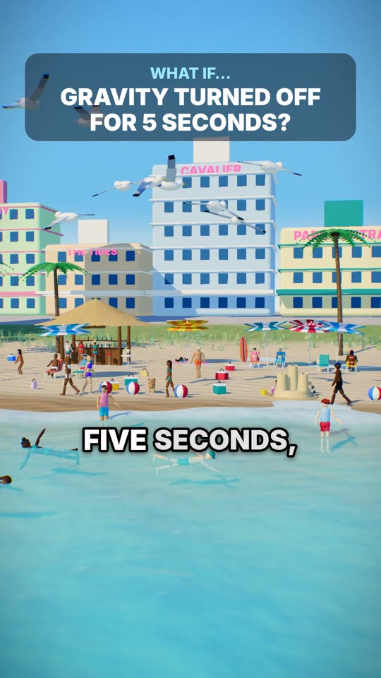
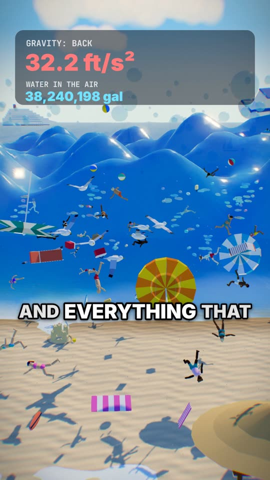
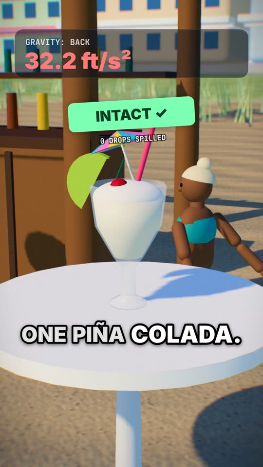

Original 3D "what if" videos, made with code.
What If 3D Studio renders animated short videos about impossible questions — what if gravity switched off for five seconds? — and sends each finished video to the creator's TikTok inbox as a draft, so the creator reviews it and decides whether to publish.
Connect with TikTok


How it works
The creator signs in with TikTok (Login Kit) and authorizes uploading drafts.
Each video is scripted, voiced, animated in 3D and rendered from code — 1080×1920, over 60 seconds.
The finished video is uploaded to the creator's TikTok inbox as a draft (Content Posting API, upload mode).
The creator opens the notification in TikTok, edits the caption and privacy, and publishes — or not.
The studio never publishes on its own. Nothing goes live without the creator tapping "Post" in the TikTok app.